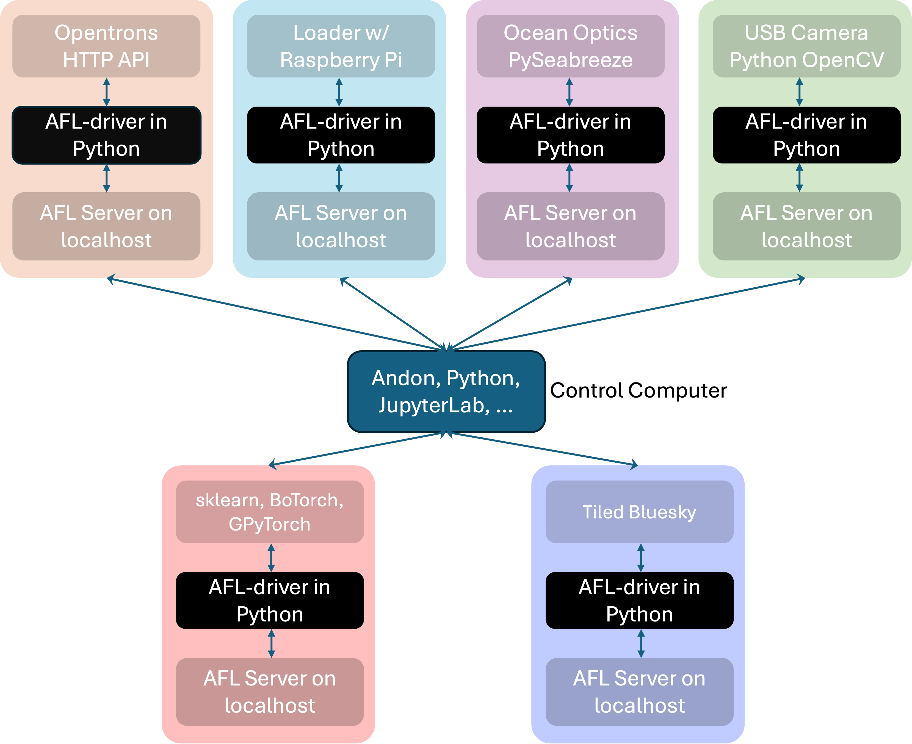
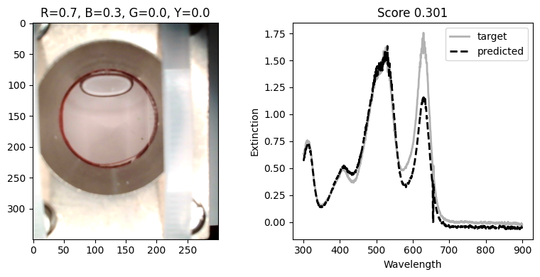

Closed-Loop UV–Vis Color Matching#
This tutorial builds a closed-loop experiment that mixes four dye stocks, measures each sample, and uses Bayesian optimization to choose the next composition.
The loop has four stages:
An Opentrons OT-2 robot (
OT2Prepare) prepares a candidate composition.A pneumatic loader (
PneumaticPressureSampleCell) moves the sample through a UV–Vis cell (SeabreezeUVVis) and past a USB camera (RGBCamera) looking at the sample cell.Each driver writes its result to Tiled, and
DoubleAgentDriverassembles the entries into one campaign dataset.A pipeline scores the spectrum against a target and proposes the next point on the four-component simplex.
Prerequisites#
This is an integration tutorial for an already commissioned laboratory. Before running it, start the following AFL servers through Andon and verify the physical deck, tubing, catch position, rinse procedure, and instrument safety limits:
Service |
Example address |
|---|---|
|
|
|
|
|
|
|
|
|
|
Here’s a pictorial representation of how the services interact with each other and Tiled through a central control computer. The control computer runs the Python script that orchestrates the closed-loop experiment:


All services must write to the same Tiled instance; this is handled automatically
when the servers are started through Andon.
The analysis environment also needs AFL.double_agent, NumPy, and xarray.
The host names, ports, username, Tiled entry ID, labware path, and deck locations below are examples; replace them with values for your deployment.
Start by importing the AFL-related modules used to construct the agent pipeline.
import json
import time
import uuid
from pathlib import Path
import matplotlib.pyplot as plt
import numpy as np
import xarray as xr
from AFL.automation.APIServer.Client import Client
from AFL.automation.shared.tiled import get_tiled_client
from AFL.double_agent.AcquisitionFunction import BoTorchAcquisition
from AFL.double_agent.AmplitudePhaseDistance import AmplitudePhaseTargetScore
from AFL.double_agent.Generator import BarycentricGrid, RandomBoundedSimplex
from AFL.double_agent.Pipeline import Pipeline
from AFL.double_agent.Preprocessor import SplinePreprocessor
from AFL.double_agent.PyTorchExtrapolator import BoTorchRegressor
Connect to the Services#
Create a client for each service and use one campaign ID everywhere. A unique campaign ID prevents measurements from different runs from being combined.
ot2 = Client("localhost", port=5005)
camera = Client("localhost", port=5095)
agent = Client("localhost", port=5053)
uvvis = Client("localhost", port=5051)
loader = Client("piloader", port=5000)
for client in (ot2, camera, agent, uvvis, loader):
client.login("your-username")
Specify the Optimization Problem#
This notebook uses stocks of four dyes to match a target UV–Vis spectrum.
The optimization problem is defined by the stock names, the total volume of
each sample, and the number of initial and iterative samples.
We use the OT2Prepare driver’s prepare task to mix the stocks, defining
each sample in terms of its stock volume fractions.
The optimization bounds are therefore defined by the volume fraction of each
component.
tiled = get_tiled_client()
campaign_id = f"color-matching-{uuid.uuid4().hex[:8]}"
components = ["stock_Red", "stock_Blue", "stock_Green", "stock_Yellow"]
bounds = {name: {"min": 0.01, "max": 0.95} for name in components}
total_volume = "1200 ul"
n_initial = 3
n_iterations = 25
Load the Target Spectrum#
The optimization target is an existing UV–Vis result in Tiled. Read its
wavelength coordinate and extinction signal.
You can also use a CSV file or any other source to define the target spectrum.
target_entry_id = "REPLACE-WITH-A-TILED-ENTRY-ID"
target_data = tiled["run_documents"][target_entry_id].read(
variables=["wavelength", "extinction"]
)
target_wavelengths = target_data["wavelength"].values
target_extinction = target_data["extinction"].values.flatten()
Configure Preparation and Data Collection#
Reset the OT-2, load the deck, and register the four stock solutions. The following is the layout used by the original experiment; change it to match your validated setup.
ot2.enqueue(task_name="reset", interactive=True)
ot2.enqueue(
task_name="load_labware",
name="opentrons_96_tiprack_20ul",
slot="5",
interactive=True,
)
ot2.enqueue(
task_name="load_labware",
name="opentrons_96_tiprack_300ul",
slot="6",
interactive=True,
)
ot2.enqueue(
task_name="load_instrument",
name="p20_single_gen2",
mount="left",
tip_rack_slots=["5"],
interactive=True,
)
ot2.enqueue(
task_name="load_instrument",
name="p300_single",
mount="right",
tip_rack_slots=["6"],
interactive=True,
)
ot2.enqueue(
task_name="load_labware",
name="nest_96_wellplate_2ml_deep",
slot="1",
interactive=True,
)
ot2.enqueue(
task_name="load_labware",
name="nist_pneumatic_loader",
slot="10",
interactive=True,
)
labware_definition = json.loads(
Path("/path/to/nist_8_wellplate_20000ul.json").read_text()
)
ot2.enqueue(
task_name="load_labware",
name=labware_definition["parameters"]["loadName"],
slot="2",
labware_json=labware_definition,
interactive=True,
)
for column, color in enumerate(("Red", "Green", "Blue", "Yellow"), start=1):
ot2.enqueue(
task_name="add_stock",
solution={
"name": f"stock_{color}",
"sources": [
{"location": f"2A{column}", "initial_volume": "20 ml"},
{"location": f"2B{column}", "initial_volume": "20 ml"},
],
"concentrations": {color: "1 mg/ml"},
"volumes": {"H2O": "20 ml"},
"solutes": [color],
"tip_location": [f"6A{column}", f"5A{column}"],
},
interactive=True,
)
ot2.enqueue(
task_name="set_config",
stock_mix_order=["stock_Red", "stock_Green", "stock_Blue", "stock_Yellow"],
interactive=True,
)
Tell the agent how to find and align the outputs. campaign_id_path points
to the campaign metadata written by set_sample later in the tutorial.
input_spec = {
"campaign_id": campaign_id,
"sample_dim": "sample",
"sources": {
"composition": {
"driver_name": "OT2Prepare",
"task_name": "prepare",
"campaign_id_path": "AL_campaign_name",
"source": "metadata",
"path": "prepare.balanced_target.stock_volume_fractions",
"mapping_to_vector": True,
"dims": ["component"],
},
"avg_rgb": {
"driver_name": "RGBCamera",
"task_name": "capture_rgb",
"campaign_id_path": "attrs.AL_campaign_name",
"source": "dataset",
"path": "avg_rgb",
},
"uvvis": {
"driver_name": "SeabreezeUVVis",
"task_name": "measure",
"campaign_id_path": "attrs.AL_campaign_name",
"source": "dataset",
"path": "extinction",
},
},
}
agent.enqueue(
task_name="setup_data_collection",
input_spec=input_spec,
interactive=True,
)
Convert Suggestions into Preparation Targets#
The agent returns compositions as an xarray object. This helper converts each
row into the mapping expected by OT2Prepare.prepare.
def xarray_to_targets(data, *, name="color_sample", total_volume="1200 ul"):
if "component" not in data.dims:
raise ValueError("Input must have a 'component' dimension")
sample_dims = [dim for dim in data.dims if dim != "component"]
if not sample_dims:
data = data.expand_dims(_sample=[0])
sample_dim = "_sample"
elif len(sample_dims) == 1:
sample_dim = sample_dims[0]
else:
data = data.stack(_sample=sample_dims)
sample_dim = "_sample"
data = data.transpose(sample_dim, "component")
targets = []
for index in range(data.sizes[sample_dim]):
sample = data.isel({sample_dim: index})
targets.append({
"name": name if data.sizes[sample_dim] == 1 else f"{name}_{index}",
"stock_volume_fractions": {
str(component): float(value)
for component, value in zip(sample.component.values, sample.values)
},
"total_volume": total_volume,
})
return targets
Run One Physical Experiment#
For every candidate, assign the same sample identity and campaign to all drivers. Keep the returned Tiled IDs: the agent uses them to assemble the composition, spectrum, and image without copying the arrays through the control script.
def prepare_and_measure(iteration, target, destination):
sample_uuid = f"SAM-{uuid.uuid4()}"
sample_name = f"{campaign_id}-sample-{iteration:03d}"
for client in (ot2, uvvis, camera, loader):
client.enqueue(
task_name="set_sample",
sample_name=sample_name,
sample_uuid=sample_uuid,
AL_campaign_name=campaign_id,
interactive=True,
)
prepared = ot2.enqueue(
task_name="prepare",
target=target,
dest=destination,
capture_task_video=True,
interactive=True,
)
composition_id = prepared["tiled_entry_id"]
ot2.enqueue(
task_name="transfer_to_catch",
source=destination,
dest="10A1",
volume="900",
mix_before=[2, 100],
drop_tip=False,
return_tip=True,
blow_out=True,
tip_location="6A5", # Replace with your actual tip location you would like to use for the transfer
interactive=True,
)
ot2.enqueue(task_name="home", interactive=True)
loader.enqueue(
task_name="loadSample",
load_dest_label="afterUVVis", # Replace with your actual destination label
interactive=True,
)
time.sleep(10) # Replace fixed delays with validated settling times.
uvvis_result = uvvis.enqueue(
task_name="measure",
n_frames=4,
reduced=True,
exposure=0.1,
wavelengths=[300.0, 900.0],
interactive=True,
)
loader.enqueue(
task_name="advanceSample",
load_dest_label="afterTurb", # Replace with your actual destination label
interactive=True,
)
time.sleep(10)
rgb_result = camera.enqueue(
task_name="capture_rgb",
plotting=True,
interactive=True,
)
loader.enqueue(task_name="rinseCell", interactive=True)
return composition_id, uvvis_result["tiled_entry_id"], rgb_result["tiled_entry_id"]
Seed the Campaign#
Bayesian optimization needs initial observations. Since we are working with volume fractions, we can use a random simplex generator to create initial samples so that the resulting compositions are valid four-component mixtures that add up to 1.0.
The following code generates n_initial reproducible samples from the
simplex, runs them through prepare_and_measure, and appends their Tiled
entries to the agent dataset.
initial_data = RandomBoundedSimplex(
output_variable="initial_composition",
components=components,
n_samples=n_initial,
sample_dim="sample",
basis=1.0,
random_seed=0,
).calculate(xr.Dataset()).output
initial_targets = xarray_to_targets(
initial_data["initial_composition"], total_volume=total_volume
)
for iteration, target in enumerate(initial_targets):
wells = json.loads(ot2.query_driver(r="get_available_wells", slot=1))
composition_id, uvvis_id, rgb_id = prepare_and_measure(
iteration, target, wells[0]
)
agent.enqueue(
task_name="append_dataset",
entries={
"composition": composition_id,
"avg_rgb": rgb_id,
"uvvis": uvvis_id,
},
interactive=True,
)
Build the Optimization Pipeline#
The pipeline interpolates all spectra onto one wavelength grid, computes an amplitude-and-phase distance from the target, fits a regressor, and minimizes that distance over valid four-component mixtures.
An RGB image is recorded with each sample for inspection, but it is not part of this objective.
def build_pipeline(wavelengths, spectrum):
target = xr.Dataset(
{"target_spectrum": ("wavelength", np.asarray(spectrum, dtype=float))},
coords={"wavelength": np.asarray(wavelengths, dtype=float)},
)
target_spline = SplinePreprocessor(
input_variable="target_spectrum",
output_variable="spline_target_spectrum",
dim="wavelength",
x_min=float(np.min(wavelengths)),
x_max=float(np.max(wavelengths)),
smoothing_factor=1.0,
spline_degree=3,
)
target_spline.calculate(target)
spline_values = target_spline.output["spline_target_spectrum"].values
return Pipeline(
name="spectral_shape_matching",
description="Bayesian optimization of UV--Vis color match.",
ops=[
SplinePreprocessor(
input_variable="uvvis",
output_variable="spline_uvvis",
dim="wavelength",
output_dim="spline_wavelength",
sample_dim="sample",
n_points=201,
smoothing_factor=1.0,
spline_degree=3,
x_min=float(np.min(wavelengths)),
x_max=float(np.max(wavelengths)),
),
AmplitudePhaseTargetScore(
input_variable="spline_uvvis",
output_variable="score",
target=np.asarray(spline_values, dtype=float).tolist(),
sample_dim="sample",
feature_dim="spline_wavelength",
method="discrete",
),
BarycentricGrid(
output_variable="composition_grid",
components=components,
sample_dim="grid",
grid_spec=bounds,
pts_per_row=41,
basis=1.0,
dim=4,
eps=1e-9,
),
BoTorchRegressor(
feature_input_variable="composition",
predictor_input_variable="score",
output_prefix="bayesopt",
grid_variable="composition_grid",
grid_dim="grid",
sample_dim="sample",
objective_direction="minimize",
standardize=True,
posterior_optimize=True,
posterior_optimize_restarts=16,
posterior_optimize_raw_samples=128,
bounds=bounds,
is_simplex=True,
),
BoTorchAcquisition(
feature_input_variable="composition",
predictor_input_variable="score",
grid_variable="composition_grid",
bounds=bounds,
grid_dim="grid",
sample_dim="sample",
objective_direction="minimize",
standardize=True,
output_prefix="bayesopt",
output_variable="suggested_sample",
excluded_comps_variables=["parameters"],
excluded_comps_dim="component",
exclusion_radius=0.01,
count=1,
is_simplex=True,
acquisition_kind="auto",
),
],
)
pipeline = build_pipeline(target_wavelengths, target_extinction)
pipeline_id = agent.deposit_obj(pipeline)
agent.enqueue(
task_name="initialize_pipeline",
db_uuid=pipeline_id,
name="bayesopt",
interactive=True,
)
Close the Loop#
Each call to predict evaluates the accumulated campaign data and deposits
the pipeline result. Retrieve last_results, prepare its suggestion, and
append the new measurements before requesting another prediction.
for iteration in range(n_initial, n_initial + n_iterations):
agent.enqueue(
task_name="predict",
AL_campaign_name=campaign_id,
deposit=True,
interactive=True,
)
results = agent.get_driver_object("last_results")
target = xarray_to_targets(
results.suggested_sample, total_volume=total_volume
)[0]
print(f"Current scores: {results.score.values}")
print(f"Suggested composition: {target['stock_volume_fractions']}")
wells = json.loads(ot2.query_driver(r="get_available_wells", slot=1))
composition_id, uvvis_id, rgb_id = prepare_and_measure(
iteration, target, wells[0]
)
agent.enqueue(
task_name="append_dataset",
entries={
"composition": composition_id,
"avg_rgb": rgb_id,
"uvvis": uvvis_id,
},
interactive=True,
)
After the final iteration, prepare the predicted best composition as a physical confirmation sample:
best_target = xarray_to_targets(
results.bayesopt_best_x, total_volume=total_volume
)[0]
wells = json.loads(ot2.query_driver(r="get_available_wells", slot=1))
composition_id, uvvis_id, rgb_id = prepare_and_measure(
n_initial + n_iterations, best_target, wells[0]
)
print(
f"Tiled entries: composition={composition_id}, "
f"UV-Vis={uvvis_id}, image={rgb_id}."
)
The campaign’s Tiled entries preserve the formulation, spectrum, image, and optimization results for later analysis.
Here’s an example of how to read the campaign dataset and plot the UV–Vis spectra and corresponding images for the target and predicted best composition:
target_img_id = "<replace-with-tiled-entry-id-for-target-image>"
target_uvvis_id = "<replace-with-tiled-entry-id-for-target-uvvis>"
target_img = tiled["run_documents"][target_img_id].read(variables=["img_rgb", "mask", "avg_rgb"])
target_uvvis = tiled["run_documents"][target_uvvis_id].read(variables=["wavelength", "extinction"])
fig, axs = plt.subplots(1, 2, figsize=(4*2, 4))
# Target image
axs[0].imshow(target_img["img_rgb"])
title = ", ".join(
f"{component.removeprefix('stock_')[0]}={value:.1f}"
for component, value in zip(results.bayesopt_best_x.component.values, results.bayesopt_best_x.values)
)
axs[0].set_title(title)
# Target UV–Vis spectrum
axs[1].plot(target_wavelengths, target_extinction, color="k", linewidth=2.0, alpha=0.3, label="target")
axs[1].plot(target_uvvis["wavelength"], target_uvvis["extinction"], color="k", ls='--', linewidth=2.0, label="predicted")
axs[1].set_xlabel("Wavelength")
axs[1].set_ylabel("Extinction")
axs[1].set_title(f"Score {float(results.bayesopt_best_f):.3f}")
axs[1].legend()
plt.tight_layout()
plt.show()
You should see something like this:

